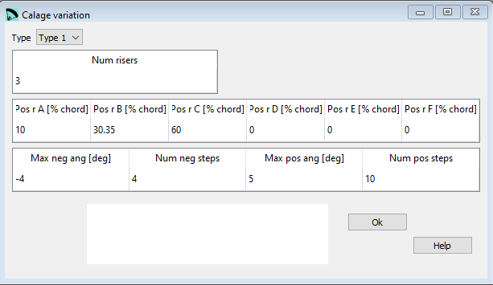

Calage variation¶
Calage is a French word, which describes very well the system used by lep to define the main angle adjustment of the wing. There seems to be no exact translation for Calage in english, that’s why we continue to use the french word.
From the geometric point of view, the Calage is the distance measured in % of the chord of the “central reference profile”, from the starting point of the profile (0,0), to the point resulting from the intersection between the profile chord and the perpendicular line that passes through the position of the pilot (main carabiners).
Alternatively, if we imagine the central reference profile with its chord in a horizontal position, the calage is a point on this chord (segment) located at a distance % from the profile nose. If the calage is small, the pilot is closer to the leading edge, and the flight speed is higher. If the calage is set backwards, the flight speed is slower.

The calage affects the angle of attack in flight. But angle of attack, is an unknown value, very difficult to estimate. It is easier to define a calage, and the wing automatically balances in flight to the correct angle.

The Calage variation window provides the possibility to study the variations in the riser lengths and Calage when applying speed system or trim system.
{kind=link}
Raw data:
*******************************************************
* 28. PARAMETERS FOR CALAGE VARIATION
*******************************************************
1
3
10. 30.35 60 0 0 0
-4 4 5 10
About angles and number of steps¶
lep will calculate in total four different cases of variation, explained in detail in the sections Speed system variation and Trim system variation below.

Type¶
Calage variation is an optional section.
If you do not want to define/ use these parameters set the Type to None.
Num Risers¶
Number of risers to be considered (2,3,4,5 or 6).
Pos. R. A….F¶
% of central chord for riser A…F (it is not necessary to match anchor position).
Speed system variation¶
The neg angle and the num of neg steps do define the calculations to be done for a speed system variation.
Two cases are calculated.
the first risers length is changed, the pivot is in the last riser
the last risers length is changed, the pivot is in the first riser
Max neg ang¶
Here in you define the max negative angle alpha to be taken into the calculation. The study parameters will be adjusted to calculate the variation between the max neg angle and 0.
Num neg steps¶
The number of steps to be calculated. A neg angle of -4 and 4 steps will provide 5 lines of output, one line per degree.
Trim system variation¶
The poos angle and the num of pos steps do define the calculations to be done for a trim system variation.
Two cases are calculated.
the last risers length is changed, the pivot is in the first riser
the first risers length is changed, the pivot is in the last riser
Max pos ang¶
Here in you define the max positive angle alpha to be taken into the calculation. The study parameters will be adjusted to calculate the variation between the max pos angle and 0.
Num neg steps¶
The number of steps to be calculated. A pos angle of 5 and 10 steps will provide 11 lines of output, one line per .5 degree.
Output:
7. CALAGE AND RISERS VARIATIONS WITH ANGLE
a) Speed system pivot in last riser:
-------------------------------------------
i alpha A B C Calage
1 -0.00 0.00 0.00 0.00 31.00
2 -1.00 -2.68 -1.60 0.00 26.90
3 -2.00 -5.36 -3.20 0.00 22.83
4 -3.00 -8.04 -4.80 0.00 18.80
5 -4.00 -10.70 -6.39 0.00 14.86
b) Speed system pivot in first riser:
-------------------------------------------
i alpha A B C Calage
1 -0.00 0.00 0.00 0.00 31.00
2 -1.00 0.00 1.10 2.67 26.89
3 -2.00 0.00 2.20 5.34 22.78
4 -3.00 0.00 3.29 8.00 18.66
5 -4.00 0.00 4.39 10.65 14.54
c) Trimer system pivot in first riser:
-------------------------------------------
i alpha A B C Calage
1 0.00 0.00 0.00 0.00 31.00
2 0.50 0.00 -0.55 -1.34 33.05
3 1.00 0.00 -1.10 -2.68 35.10
4 1.50 0.00 -1.65 -4.02 37.15
5 2.00 0.00 -2.19 -5.36 39.20
6 2.50 0.00 -2.74 -6.71 41.24
7 3.00 0.00 -3.29 -8.05 43.28
8 3.50 0.00 -3.84 -9.40 45.32
9 4.00 0.00 -4.39 -10.74 47.36
10 4.50 0.00 -4.93 -12.09 49.39
11 5.00 0.00 -5.48 -13.44 51.42
d) Trimer system pivot in last riser:
-------------------------------------------
i alpha A B C Calage
1 0.00 0.00 0.00 0.00 31.00
2 0.50 1.34 0.80 0.00 33.05
3 1.00 2.69 1.60 0.00 35.11
4 1.50 4.03 2.40 0.00 37.17
5 2.00 5.38 3.20 0.00 39.23
6 2.50 6.73 4.00 0.00 41.29
7 3.00 8.07 4.80 0.00 43.35
8 3.50 9.42 5.59 0.00 45.41
9 4.00 10.77 6.39 0.00 47.47
10 4.50 12.12 7.19 0.00 49.53
11 5.00 13.47 7.99 0.00 51.58
A more detailed description you can find here Laboratori d'envol website.